name: inverse layout: true class: center, middle, inverse --- # Docker quickstart ## a super fast introduction to docker ### ~45min --- layout: false ##<span style="color:purple">Outline</span> - ### Learning objectives - ### Introduction - ### Exercises --- ## <span style="color:purple">Learning objectives</span> - ### basic docker usage - ### docker commands - ### mounting paths -- ## <span style="color:purple">Requirements</span> - ### Your computer: `Docker` - ### You: `shell` / `Terminal` --- name: inverse layout: true class: center, middle, inverse --- # Introduction --- layout: false ### <span style="color:purple">Where's docker?</span> - ### docker is command line based, thus does not have a GUI - ### on unix based OS (e.g., Ubuntu, Mac OSX) open a terminal and type `docker` - ### on windows open docker toolbox or engine (depending on your specific OS) and type `docker` - ### what you see is the so called `docker man page` providing helpful information on how to use docker --- ### <span style="color:purple">Docker commands 101</span> - ### there's a lot one can do with docker: 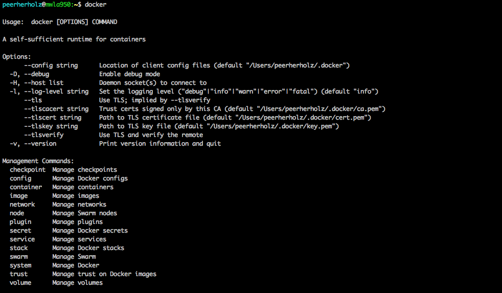 --- ### <span style="color:purple">Docker commands 101</span> 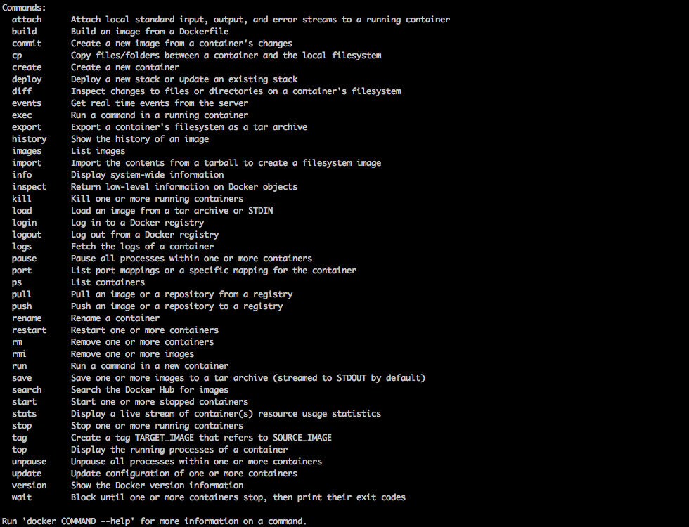 --- ###<span style="color:purple">Is it working?</span> -- #### Testing your Docker installation: ```bash docker run hello-world ``` -- - if the output looks as follows, you're good to go 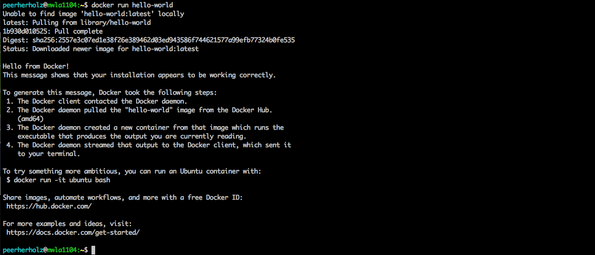 --- ###<span style="color:purple">What is happening?</span> #### the command: ```bash docker run hello-world ``` - tells docker to *run* or *execute* the *container* or *image* `hello-world` - if the wanted container is not already on your machine, `docker` automatically searches for and downloads it - `docker run` then *runs* or *executes* the given container doing whatever the container is supposed to do --- ###<span style="color:purple">Where do *docker containers* come from ?</span> -- - in most cases, *docker containers* are stored online on and downloaded from [*docker hub*](https://hub.docker.com/), an amazing and huge online repository - on [*docker hub*](https://hub.docker.com/) folks can upload and store as many *docker containers* as they want for free, only requirement: a *docker id* 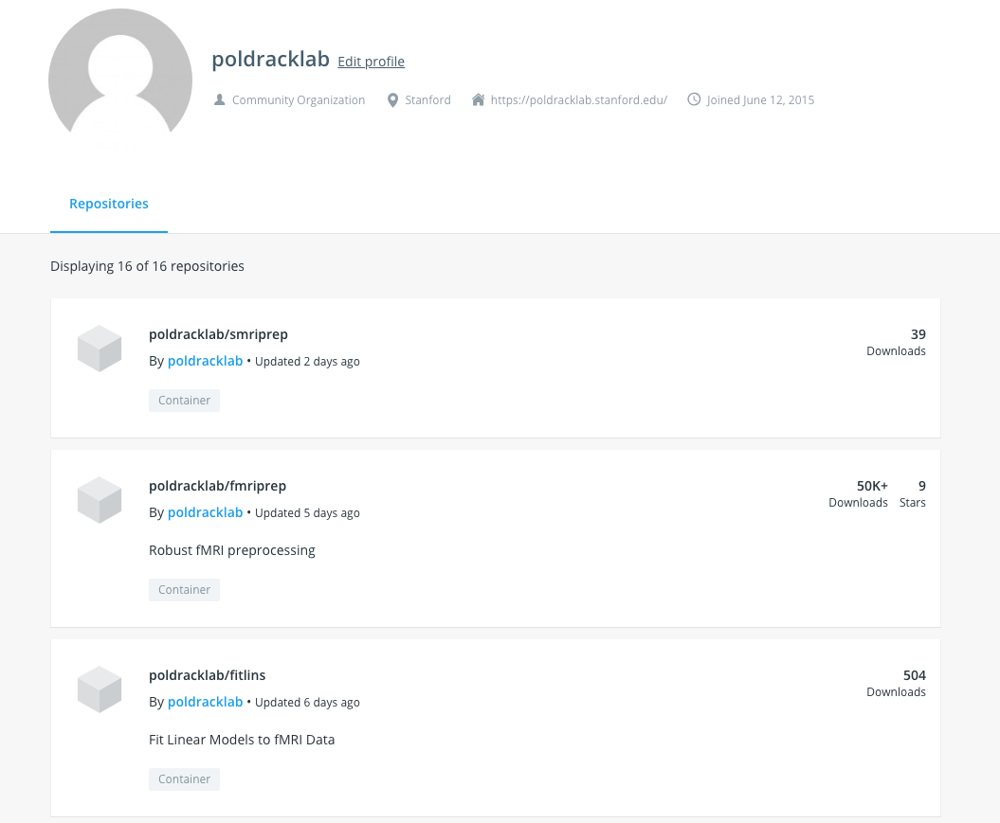 --- ###<span style="color:purple">Where do *docker containers* come from ?</span> - once *build* and *tagged*, *docker images* can be pushed to [*docker hub*](https://hub.docker.com/) via command line: ```bash docker push your-cool-image ``` or [*automatically build* from a *github repository*](https://docs.docker.com/docker-hub/builds/) after pushing commits to a respecitve repo (*note*: both methods will be covered during the afternoon sessions) <img src=https://docs.docker.com/docker-hub/builds/images/index-dashboard.png width="70%" /> --- ### <span style="color:purple">Docker commands 101 - in depth</span> - now let's further explore *docker commands* within a typical workflow - at first, we want to download a certain *docker container* to work with, for the sake of simplicity and time we're going to use the classic *ubuntu container* - instead of automatically downloading the container via *docker run*, we use the respective *docker command* `docker pull image name`, hence ```bash docker pull ubuntu ``` 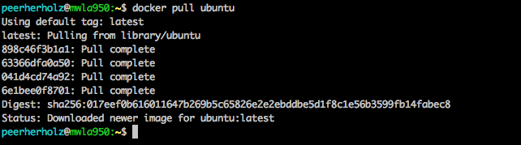 --- ### <span style="color:purple">Docker commands 101 - in depth</span> - as you can see, we downloaded all layers that are needed to build the classic *ubuntu docker container*, with the message `Status: Downloaded newer image for ubuntu:latest` showing you that everything worked - **super important** : by default, `docker pull` always searches and downloads the container that is tagged with `latest`, hence if you want to have a certain version (e.g., an older release or developer) it is necessary to indicate the respective tag: ```bash docker pull ubuntu:version ``` --- ### <span style="color:purple">Docker commands 101 - in depth</span> - now we want to work with our newly downloaded *docker container*, so we decide to `run` or `execute` it via: ```bash docker run ubuntu ``` 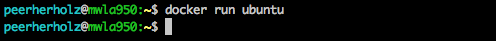 -- - docker used `run`, nothing happend (Pokémon pun): all the fuzz for that? -- - each *docker container* is build for reason and purpose, hence what happens when you `run` a given *docker container* depends (more or less) exclusively on its setup and definition -- - the *docker container* we're currently using has no defined magic, that is functionality that automatically starts when running (*note*: more on that during the afternoon sessions) -- - it is therefore super important to consult the `readme` or `docs` of a given *docker container* before using it --- ### <span style="color:purple">Docker commands 101 - in depth</span> - *automated functionality* poses as one major approach to use docker images (e.g., within pipelines and workflows) ```bash docker run ubuntu echo "hello from your container" ``` 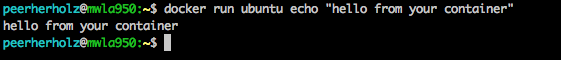 -- - however, the other one utilizes a given *docker container* within a *interactive fashion* which can be achieved through by including the `--it` flag within the `docker run command`: ```bash docker run -it ubuntu bash ``` - here, we also tell the *ubuntu docker container* to start/enter the *bash shell* - now inside the *ubuntu docker container* we can utilize the functionality from the ubuntu OS and exit the *container* by typing *exit* 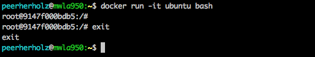 --- ### <span style="color:purple">Docker commands 101 - in depth</span> - depending on a given container's architecture and definition, it should remove itself from *running instances* when exiting, however to be sure it's worth to ensure that and check *running instances* when you notice e.g., a drop in perfomance (*note*: more on docker management in the next session) - this can easily be done by ```bash docker ps ``` 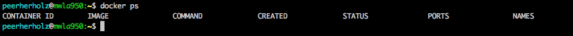 -- - in order to ensure that a given *docker container* is removed from *running instances* after exiting, the `--rm` flag can be included in the `docker run` command: ```bash docker run -it --rm ubuntu bash ``` --- ### <span style="color:purple">Docker commands 101 - in depth</span> - when working within a *docker container*, creating, modifying and deleting files, changes are neither permanent nor saved, as this is against the *encapsulation* and *reproducibility* idea: 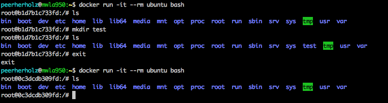 -- - furthermore, we cannot interact with data stored on our host or somewhere outside the *docker container* -- - in order to address both problems, we need to `mount` paths --- ### <span style="color:purple">Docker commands 101 - in depth</span> - `mounting` describes a mapping from *paths outside the docker container* to *paths inside the docker container* - it is achieved through the `-v` flag within the `docker run` command and utilized as follows: `-v path/outside/container:/path/inside/container` - for example, let's make `/Desktop` available *inside the docker container* as `/data`: ```bash docker run -it --rm -v /Users/peerherholz/Desktop:/data ubuntu bash ``` 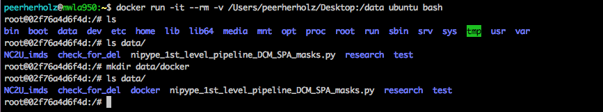 --- ### <span style="color:purple">Docker commands 101 - in depth</span> - you can also restrict the rights of mounted paths to e.g. *read only* in case any modification should be prevented (for example within automated functionality): ```bash docker run -it --rm -v /Users/peerherholz/Desktop:/data:ro ubuntu bash ``` 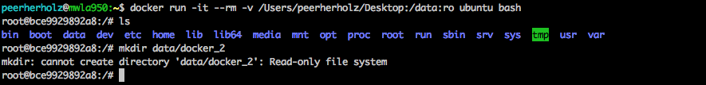 -- - most of the time, it's a good idea to indicate absolute paths on the host system -- - in our example the directory `/data` didn't exist before mounting it, hence it was created automatically, however this is also depends on the *docker cotnainer* and it's setup/definition at hand as e.g. within automated functionality a certain `directory` is expected - as usual: check the *readme* and/or *docs* of a given *docker container* --- ### <span style="color:purple">Docker: Using existing images</span> - [Docker Hub](https://hub.docker.com/) -- repositories to share Docker images - managing images: ```bash # Download docker container 'ubuntu' docker pull ubuntu # Show all installed docker container docker images # remove images docker rmi <image_id> # remove dangling images docker rmi $(docker images | grep "^<none>" | awk '{print $3}') ``` - running containers ```bash docker run ubuntu docker run ubuntu echo "hello from your container" ``` - `-it` option: running interactively ```bash docker run -it ubuntu bash ``` --- ### <span style="color:purple">Docker: Using existing images</span> - managing containers ```bash # list currently running containers docker ps # list created containers docker ps -a # remove containers docker rm <container_id> # remove all stoped containers docker rm $(docker ps -a -q) ``` - `--rm` option: automatically removing the container when it exits ```bash docker run -it --rm ubuntu ``` - Export and Import docker containers ```bash # Export docker image docker save -o ubuntu_container.tar ubuntu # Import docker image on another PC docker load --input ubuntu_container.tar ``` --- ### <span style="color:purple">Docker: Using existing images</span> - adding a data volume to a container (you can use multiple times to mount multiple data volumes) ```bash # you shoul use absolute path to the LocalDirectory docker run -it --rm -v LocalDirectory:/src ubuntu # read only mode docker run -it --rm -v LocalDirectory:/src:ro ubuntu # you can mount multiple data volumes # the directory `temp` doesn't have to exist and will be created docker run -it --rm \ -v LocalDirectory:/src \ -v TempLocalDirectory:/temp \ ubuntu ``` --- ### <span style="color:purple">Docker: Installing software with Dockerfile</span> - More about the Dockerfile syntax you can find [here](https://docs.docker.com/engine/reference/builder/#from) - Example of Dockerfile to run Nipype workflow from [Docker Hub](https://hub.docker.com/r/miykael/nipype_tutorial/~/dockerfile/) - Generate custom Docker image for your neuroimaging environment with [Neurodocker](https://github.com/kaczmarj/neurodocker) --- name: inverse layout: true class: center, middle, inverse --- # Questions?